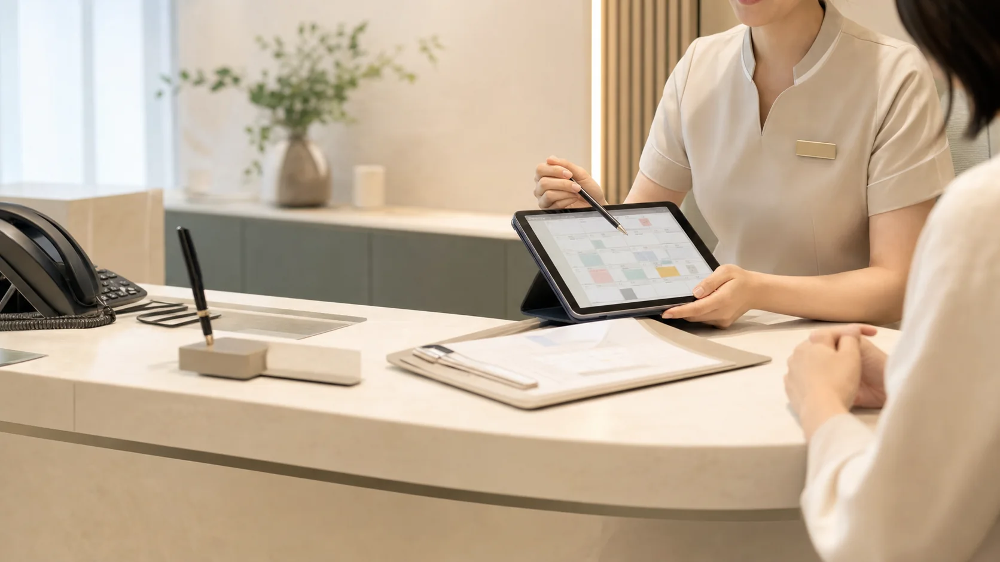

내시경, 초음파, 혈액검사 포함 여부에 따라 식사와 물 섭취 안내가 달라집니다.
예약 문의
예약 전에 필요한 확인사항을 먼저 정리해 방문 당일 혼선을 줄입니다.
당뇨약, 항응고제, 항혈소판제는 예약 단계에서 약 이름과 복용 목적을 확인합니다.
수면검사를 희망하면 보호자 동행 또는 대중교통 이용 가능 여부를 함께 확인합니다.
결과상담 방식, 조직검사 결과 확인 일정, 추적검사 필요 여부를 안내합니다.
01
예약 요약
선택 진료
건강검진
상담 방식
전화/카카오
응답 목표
영업일 1시간 내
1문의 접수 후 진료/검사 종류를 먼저 분류합니다.
2금식, 복용약, 보호자 동행 같은 준비 조건을 확인합니다.
3가능 일정과 방문 전 안내를 정리해 예약을 확정합니다.
02
상담 연결
접수 후 병원 상담팀이 검사 준비사항, 가능 시간, 비용 안내를 진행합니다.
- 검진 전 금식 안내
- 대장내시경 약 복용 안내
- 프로그램 비용 확인
- 주차와 위치 안내

예약 채널을 명확히 분리합니다
전화, 카카오 상담, 온라인 예약 중 편한 방식으로 문의할 수 있습니다.
예약 후 안내 흐름
문의 접수 후 준비사항 확인, 일정 안내, 방문 전 안내 순서로 진행됩니다.
접수
이름, 연락처, 희망 진료 확인
확인
검사 준비사항과 가능 시간 확인
안내
금식, 복용약, 보호자 동행 안내
확정
예약 시간과 방문 동선 확정
방문
접수 후 검사 또는 진료 진행
상담팀 확인 항목
검진과 내시경은 준비사항이 달라 당일 예약 가능 여부가 다릅니다. 예약 문의 단계에서 검사 종류, 금식 가능 여부, 복용약, 보호자 동행 가능 여부를 확인합니다.
건강검진공단 대상 여부, 희망 프로그램, 금식 여부, 결과상담 희망일 확인
내시경위/대장 여부, 수면 여부, 장정결제, 복용약, 보호자 동행 확인
초음파검사 부위, 금식 필요 여부, 이전 검사결과지 보유 여부 확인
일반진료증상, 기존 질환, 복용약, 희망 원장 또는 시간대 확인